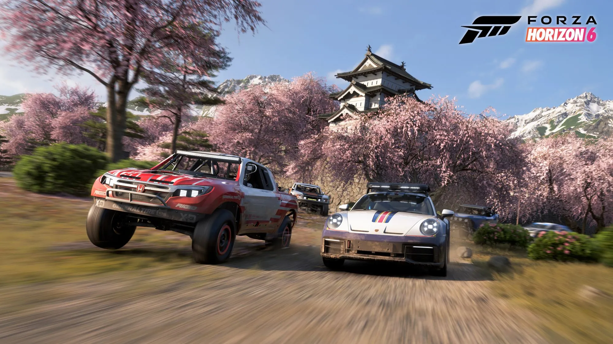
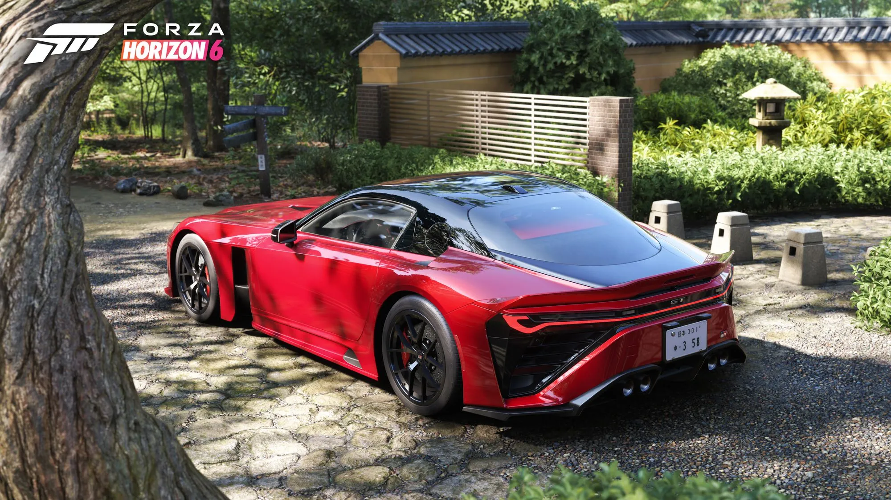
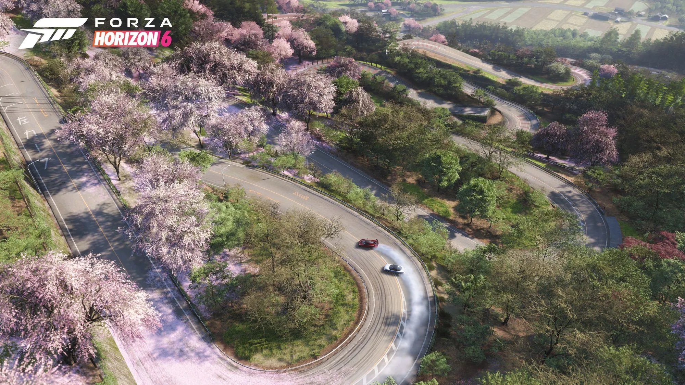

Dopo anni di richieste da parte dei fan, Playground Games ha finalmente deciso di portare l'Horizon Festival nel paradiso dell'automotive: il Giappone. Forza Horizon 6 è a mani basse il miglior gioco di guida non simulativo mai fatto, con più di 550 automobili tra cui scegliere, decine di tracciati diversi, una mappa enorme e tanto altro. In aggiunta alle classiche quattro categorie di gare presenti anche nei precedenti capitoli (gare su strada, rally, cross-country e street racing), Forza Horizon 6 ne aggiunge una caratteristica del panorama nipponico: le gare touge. Gare 1vs1 tra i passi di montagna dove chi è in fuga guadagna punti con una guida pulita e allungando la distanza, mentre l'inseguitore deve rimanere attaccato cercando anche lui di non commettere errori. Quindi, la base c'è la abbiamo, aggiungici un comparto grafico straordinario con scenari da cartolina, macchine precise nei minimi dettagli e un comparto audio completamente rivisto e hai un gioco che rimarrà nei cuori degli appassionati del genere per moltissimo tempo.



